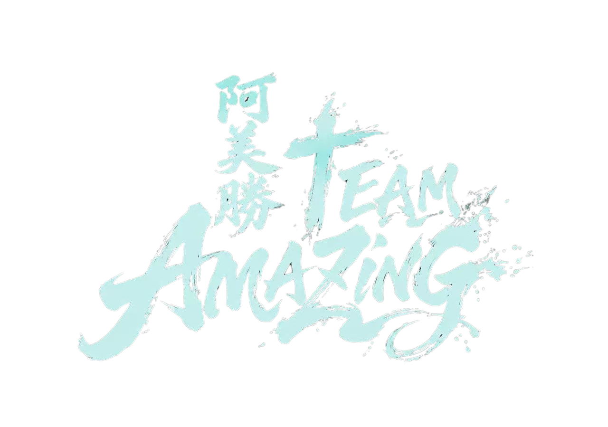
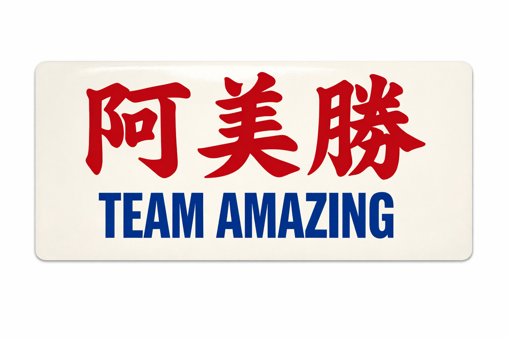

「오직 여호와를 앙망하는 자는 새 힘을 얻으리니 독수리가 날개치며 올라감 같을 것이요 달음박질하여도 곤비하지 아니하겠고 걸어가도 피곤하지 아니하리로다」
— 이사야 40:31
"But those who hope in the Lord will renew their strength. They will soar on wings like eagles; they will run and not grow weary, they will walk and not be faint."
— Isaiah 40:31
신앙, 교제, 끈기의 원칙을 통해 기독교적 가치관에 기반하고 용선 운동을 중시하는 활기찬 팀을 만듭니다.
Through principles of faith, fellowship, and perseverance, we create a vibrant team based on Christian values that takes dragon boating seriously.
「보라 형제가 연합하여 동거함이 어찌 그리 선하고 아름다운고」 — 시편 133:1
"How good and pleasant it is when God’s people live together in unity!" — Psalm 133:1
연습 외에 소그룹 및 복음 모임을 조직하여 기독교적 가치관을 삶에 녹여냅니다.
Organizing small groups and gospel gatherings outside of practice to integrate Christian values into life.
대원 간의 우정과 신뢰를 높이고 서로를 나누며 지지하고 격려합니다. 친구는 사랑이 끊이지 않습니다.
Increasing friendship and trust; sharing, supporting, and encouraging one another. A friend loves at all times.
용선 운동에 진지하게 임하며, 상호 신뢰와 배려를 바탕으로 공동의 목표를 달성합니다.
Taking the sport seriously and achieving goals together based on mutual trust and care.
용선 커뮤니티와 교류하여 다른 팀들과 소통하고 그리스도의 사랑을 나타내어 지역사회의 축복이 됩니다.
Engaging with the dragon boat community, allowing us to exchange with other teams and manifest Christ's love as a blessing to the community.
잠언 17:17
Proverbs 17:17
「친구는 사랑이 끊이지 아니하고 형제는 위급한 때를 위하여 났느니라」
"A friend loves at all times, and a brother is born for a time of adversity."
In the heart of Hong Kong’s competitive dragon boat circuit, our team is proving that the strength of a stroke isn't just about physical power, it’s about the heart behind it. Team Amazing 「아미승」, a vibrant crew of part-time athletes, has established a mission that extends far beyond the trophies and podiums of our recent races.

Absolutely not. While our leadership team is anchored in Christian values and we operate as a faith-based fellowship, Team Amazing is proudly built on radical inclusivity. We welcome paddlers from all backgrounds, beliefs, cultures, and walks of life. The only requirement is a shared commitment to sportsmanship, mutual respect, and pulling together in the boat.
전혀 그렇지 않습니다. 리더십 팀이 기독교적 가치관에 뿌리를 두고 신앙 기반의 교제로서 운영되지만, 아미승은 극진한 포용성을 자랑합니다. 다양한 배경, 신념, 문화, 그리고 각계각층의 패들러(노 젓는 이)들을 환영합니다. 유일한 조건은 스포츠맨십과 상호 존중에 대한 공감대, 그리고 한 배에서 한마음으로 노를 젓겠다는 마음입니다.
"阿美勝" is the phonetic transliteration of "Amazing." For us, it represents the amazing grace, strength, and fellowship we experience as a team. It reminds us that when a crew operates with shared values and a unified heart, the community we build together is truly amazing.
"아미승(阿美勝)"은 영어 "Amazing"의 광동어 음역입니다. 우리에게 이는 팀으로서 함께 경험하는 놀라운 은혜(Amazing Grace), 힘, 그리고 교제의 정을 의미합니다. 모든 팀원이 공통된 가치관과 하나 된 마음으로 움직일 때, 우리 공동체가 함께 일구어내는 결속력이 가장 경이롭고 "Amazing"하다는 것을 일깨워 줍니다.
We don't see them as separate, they reinforce each other! The discipline, perseverance, and resilience required to be an elite dragon boat paddler are the exact same qualities we cultivate in our personal and spiritual growth. We train hard on the water to win races, and we use our gathering times off the water to support each other's lives through fellowship and small groups.
우리는 이 둘을 별개로 보지 않으며, 서로가 서로를 강화합니다! 엘리트 용선 패들러가 되기 위해 필요한 규율, 인내, 회복력은 우리의 개인적 및 영적 성장에서 배양하는 자질과 정확히 일치합니다. 우리는 경주에서 이기기 위해 물 위에서 치열하게 훈련하며, 물 밖의 모임 시간에는 교제와 소그룹을 통해 서로의 삶을 지지해 줍니다.
Team Amazing is a purpose-driven dragon boat community rooted in Christian values. As part-time athletes, we train hard on the water to pursue athletic excellence while building deep mutual trust. Off the water, our fellowship supports each other's life journeys and spreads love to the community. We welcome paddlers of all faiths and backgrounds to paddle as one crew. For us, the ultimate victory isn’t crossing the finish line first, it’s the lives touched and lifelong friendships built along the way.
"아미승"은 기독교적 가치관에 뿌리를 둔 사명 지향적 용선 공동체입니다. 아마추어 운동선수로서 우리는 탁월한 운동 능력을 추구하기 위해 물 위에서 열심히 훈련하며 깊은 상호 신뢰를 쌓습니다. 물 밖에서는 교제를 통해 서로의 삶의 여정을 지지하고 지역사회에 사랑을 전파합니다. 어떤 신앙이나 배경을 가졌든 모든 패들러가 하나의 크루로 함께 노를 젓는 것을 환영합니다. 우리에게 진정한 승리는 가장 먼저 결승선을 통과하는 것이 아니라, 여정 속에서 서로의 삶을 감동시키고 평생의 우정을 쌓는 것입니다.
Our ultimate purpose is to fulfill the Great Commission given by Jesus Christ ("Go and make disciples of all nations"). For Team Amazing, the Great Commission isn't just about increasing numbers or expanding team scale, but focusing on genuine transformation in paddlers' lives. Through sportsmanship and fellowship, we hope to share the Gospel within the dragon boat community, guiding people into an authentic relationship with Christ and building up team members to become His disciples.
우리의 궁극적인 목적은 예수 그리스도께서 주신 지상대명제("너희는 가서 모든 민족을 제자로 삼으라")를 성취하는 것입니다. 아미승에게 대명제란 단순히 인원을 늘리거나 팀 규모를 확장하는 것이 아니라, 패들러들의 삶의 진정한 변화에 초점을 맞추는 것입니다. 스포츠맨십과 교제를 통해 용선 커뮤니티 안에서 복음을 나누고, 사람들이 그리스도와 진정한 관계를 맺도록 인도하며 팀원들을 주의 제자로 세워가고자 합니다.
2026 크리스천컵 (Christian Cup)